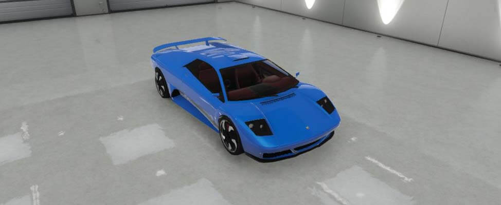

El Infernus es un automóvil deportivo de dos puertas que ha aparecido desde Grand Theft Auto III en adelante, exceptuando Grand Theft Auto Advance. Es un coche muy rápido y de poca altura, siendo unos de los vehículos más rápidos de la serie GTA.